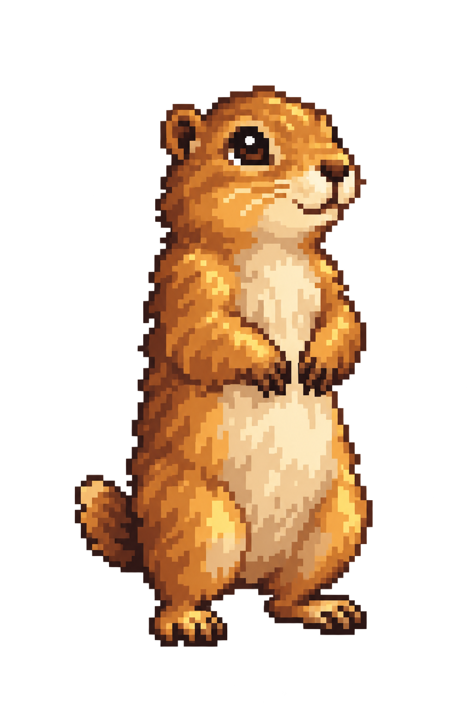

Найди и спаси всех хранителей
Двигайте карту · нажмите на суслика
Выберите друга — он расскажет свою историю.
Координаты предоставлены автором проекта. Проверяйте пешеходный путь в картах: подборки не являются проверенными маршрутами.
Здесь пока никого. Попробуйте другую подборку, поиск или фильтр.
Фото остаются на вашем устройстве. Скачайте резервную копию, чтобы не потерять коллекцию при очистке браузера или перенести её на другой телефон.
Здесь появятся ваши фото после первой встречи.
Фото остаются в браузере. Игровая карта художественная; реальные координаты — в карточках. Сюжет вымышленный.
Для первой победы найдите любых пять сусликов. Можно гулять в своём темпе и продолжить в другой день.
Назовите вашу команду — и начните историю. Чтец расскажет, что случилось в городе и как помочь его маленьким хранителям.
Первые 5 встреч — ваша первая победа. Все 24 — большой финал!
Фото хранятся только в браузере. Скачивайте копию альбома. Во время прогулки дети остаются со взрослыми; берегите скульптуры.